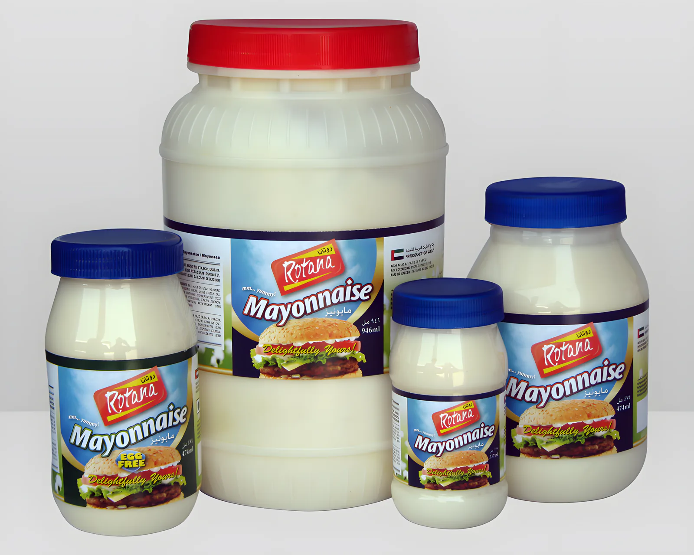

وندسور
مصنع للمواد الغذائية في الشارقة، منذ 1995.
نصنع ونعبّئ المشروبات وشراب النكهات والحلويات والصلصات والمواد الجافة في مصنعنا الحاصل على شهادة HACCP في المنطقة الصناعية 3. وتخرج منتجاتنا بعلاماتنا الخاصة كينبي وفيفيتا وصن كوينش وروتانا وجوس-سي، وبالعلامات الخاصة لعملائنا، وإلى الفنادق والمطاعم وشركات التموين في الخليج.


علاماتنا الخاصة
تُصنع في الشارقة وتُباع بأسمائنا في المحلات وبالجملة ولقطاع الفنادق والمطاعم. وكينبي هي العلامة الأم لصلصاتنا وتوابلنا وشراب النكهات والحلويات.
 صلصات وتوابل وشراب وحلوياتكاسترد وجيلي وكاتشب وخل وعصير ليمون وماء ورد وغيرها.
Vivita
صلصات وتوابل وشراب وحلوياتكاسترد وجيلي وكاتشب وخل وعصير ليمون وماء ورد وغيرها.
Vivita كورديال الفواكهزجاجات 710 مل، 12 في الكرتون.
Sunquench
كورديال الفواكهزجاجات 710 مل، 12 في الكرتون.
Sunquench مشروبات فواكه مركّزةبرتقال، زجاجات 840 مل، 6 في الكرتون.
Rotana روتانا
مشروبات فواكه مركّزةبرتقال، زجاجات 840 مل، 6 في الكرتون.
Rotana روتانا
مايونيزعبوات 8 و16 و32 أونصة، و3.7 لتر للمطابخ. Jus-C مسحوق مشروب فورينكهات فواكه في برطمانات 750 غ وعلب 900 غ و2.5 كغ.
مسحوق مشروب فورينكهات فواكه في برطمانات 750 غ وعلب 900 غ و2.5 كغ.
ما نصنعه
ستة خطوط إنتاج. افتح أيّاً منها لترى المنتجات وأحجام العبوات، أو شاهد صور المنتجات وقوائم التعبئة كاملة في صفحة المنتجات.
01المشروباتعصائر مركّزة وكورديال ومساحيق مشروبات6 منتجات
- عصائر مركّزة وكورديال750 مل × 12
- كورديال فيفيتا710 مل × 12
- مشروب صن كوينش المركّز840 مل × 6
- مسحوق جوس-سي الفوري750 غ، 900 غ، 2.5 كغ
- مسحوق الجلوكوز450 غ × 24
- شراب الورد
02شراب النكهاتشراب الشوكولاتة وشراب البان كيكمنتجان
- شراب الشوكولاتة680 مل × 12
- شراب البان كيك709 مل × 12
03الحلوياتخلطات الجيلي والكاسترد والكريم كراميل3 منتجات
- جيلي75 غ × 6 × 12
- مسحوق الكاسترد450 غ × 24
- كريم كراميل70 غ × 12 × 12
04الصلصات والتوابلمايونيز وكاتشب وليمون وخل7 منتجات
- مايونيز روتانا8 أونصات إلى 3.7 لتر
- كاتشب الطماطم5 كغ × 4
- عصير ليمون طبيعي250، 550، 946 مل
- منكّه الليمون1000 مل × 12
- خل أبيض473 مل إلى جالون
- خل أحمر473 مل، 946 مل
- خل بنكهة الفواكه
05المياه المنكّهةماء الوردمنتج واحد
- ماء الورد450 مل × 12
06منتجات جافة أخرىأساسيات الخَبز والمطبخ4 منتجات
- بيكنج باودر100 غ، 450 غ
- بيكربونات الصوديوم100 غ × 12 × 6
- شوفان أبيض400 غ × 24
- نشا الذرة400 غ × 24
خدمات الأغذية والتصنيع للغير
لمستوردي وموزعي قطاع الفنادق والمطاعم، نوفّر المجموعة كاملة من مصدر واحد، ونكيّف ما نورّده حسب كل وكيل وعميل.
- المحمّضاتالخل، عصير الليمون، منكّه الليمون
- الصلصاتكاتشب، باربكيو، صالسا
- شراب للمشروباتكورديال الليمون والفواكه، الورد، الرمان، النعناع
- شراب المشروبات الساخنةفانيلا، كراميل، بندق وغيرها
- أنواع شراب أخرىشراب البان كيك، صلصة الشوكولاتة
- خلطات الحلوياتجيلي، كاسترد، كريم كراميل
- مساحيق المشروباتمساحيق مشروبات فورية بالنكهات
علامتك، وخط إنتاجنا
البحث والتطوير جزء من كل المصنع: من توريد المواد الخام وتطوير المنتج إلى خط الإنتاج وخطة التسويق. نعدّل الوصفات حسب العميل أو السوق، ونعبّئ بالعلامات الخاصة.
وكنّا من الروّاد في إنتاج ماء الورد في دول الخليج.
علامات معروضة في أعمال التصنيع للغير لدينا
شهادة HACCP
من BM TRADA، جهة الاعتماد البريطانية المعتمدة من UKAS. وكل عملياتنا تتبع ممارسات التصنيع الجيدة (GMP).

- مختبرنا الخاصمجهّز وبكادر متخصص، يفحص كل المواد الخام ومواد التعبئة الواردة قبل استخدامها.
- ضمان الجودةبرامج قائمة لتطابق المنتجات المواصفات المتفق عليها مع العميل.
- تخزين نظيفمخازن جيدة التهوية ونظيفة، وغرف بدرجة حرارة مضبوطة للمواد التي تحتاجها.
- تصنيع وتعبئة هناخطوط التصنيع والتعبئة تحت سقف واحد في المنطقة الصناعية 3 بالشارقة.
قوائم التعبئة
لكل منتج قائمته: العبوة، ووزن الكرتون ومقاسه، وعدد الكراتين على طبلية 100 × 120 سم. بعض منها:
| المنتج | العبوة | الوزن (كغ) | الكرتون (مم) | كرتون / طبلية |
|---|---|---|---|---|
| مسحوق الكاسترد | 450 غ × 24 علبة | 13.21 | 420 × 310 × 280 | 56 |
| عصير ليمون طبيعي | 250 مل × 24 عبوة | 7.21 | 363 × 247 × 162 | 130 |
| مسحوق جوس-سي | 750 غ × 12 برطمان | 17.55 | 450 × 275 × 185 | 64 |
| ماء الورد | 450 مل × 12 عبوة | 5.89 | 262 × 200 × 238 | 120 |
| كاتشب الطماطم | 5 كغ × 4 عبوات | 21.00 | 390 × 250 × 260 | 66 |
| جيلي | 75 غ × 6 × 12 | 6.91 | 370 × 240 × 160 | 156 |
وكيل واحد لكل سوق
تُباع علاماتنا بالتجزئة والجملة، ويبحث فريق التسويق لدينا دائماً عن أسواق جديدة. في كل دولة نعمل مع وكيل حصري واحد، ويقدّم له فريق التصدير الدعم التسويقي.
موقع المصنع
شارع الصناعية الثاني، المنطقة الصناعية 3، الشارقة
بالقرب من داينا تريد، قريباً من تقاطع شارع الملك فيصل.
- الهاتف
- +971 6 543 4808
- فاكس
- +971 6 543 4088
- البريد
- kenbee@eim.ae
- ص.ب
- 65821، الشارقة، الإمارات